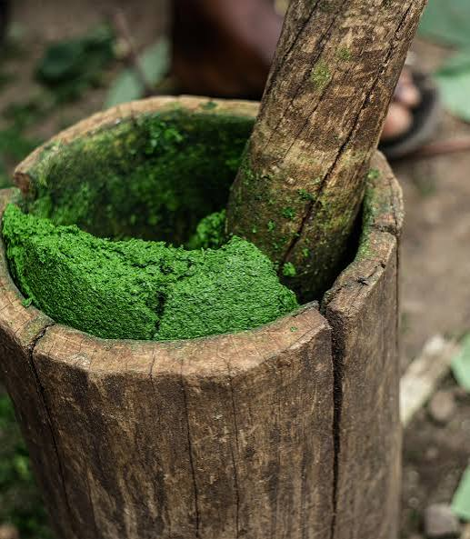

Isombe

Isombe is a beloved Rwandan dish made from pounded cassava leaves slowly cooked with peanut flour, eggplant and onions. It is often served with rice, ugali or plantain.
Ingredients
- 500 g cassava leaves
- 1 eggplant
- 3 tbsp peanut flour
- 1 onion
- 2 cloves garlic
Instructions
Step 1: Prepare the leaves
Wash the cassava leaves and pound or blend them until finely crushed.
Step 2: Simmer
Boil the leaves with chopped onion, garlic and eggplant for about 1 hour until very tender.
Step 3: Add peanut flour
Stir in peanut flour with a little water, cook 15 more minutes, season with salt and serve hot.
Nutrition Facts (approximate, per serving)
| Nutrient | Amount |
|---|---|
| Calories | 180 kcal |
| Carbohydrates | 15 g |
| Protein | 8 g |